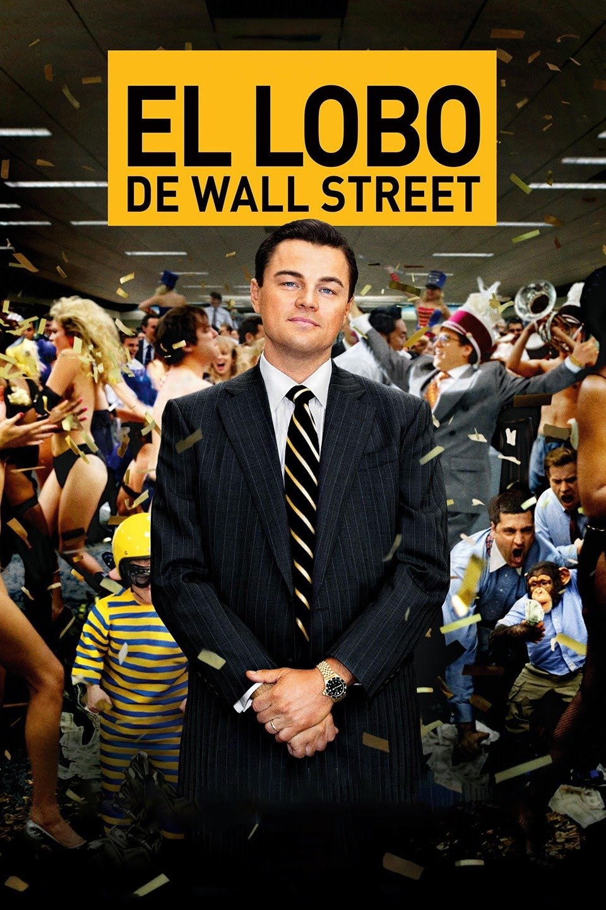

David Cots
Volver
El lobo de Wall Street

ESCUCHAR
El director Martin Scorsese ha tratado el dramático terreno del delito en Estados Unidos desde múltiples ángulos, pero con EL LOBO DE WALL STREET se asoma al abismo sumiéndose en el mundo de la variedad delictiva más contemporánea: las altas finanzas. El resultado es un viaje épico al corazón de la embriaguez producida por la codicia, la adrenalina, el sexo, las drogas y la producción constante de dinero fácil. Basada en un hecho real, EL LOBO DE WALL STREET cuenta el inverosímil auge y la continua caída al reino del placer de Jordan Belfort (Leonardo DiCaprio, nominado en tres ocasiones por la Academia de Hollywood), el corredor de bolsa neoyorquino que, junto a sus alegres colegas, amasaron una descomunal fortuna estafando millones de dólares a inversores. La película sigue la alucinante transformación de Jordan Belfort, desde que era un hombre honrado recién llegado a Wall Street hasta convertirse en un auténtico forajido de las acciones. Después de amasar una enorme fortuna en un tiempo récord, Jordan se la gasta de la forma más absurda en mujeres, tranquilizantes, cocaína, coches, su esposa (una supermodelo) y un deseo ilimitado de poseerlo todo. Mientras su empresa, Stratton Oakmont, alcanza la cima y él se entrega a los placeres más hedonistas, la SEC (Comisión de Títulos y Bolsa) y el FBI se acercan a su imperio de excesos.
LISTEN
Director Martin Scorsese has dealt with America's dramatic crime scene from multiple angles, but with THE WOLF OF WALL STREET he peers into the abyss and plunges into the world of the most contemporary variety of crime: high finance. The result is an epic journey into the heart of the intoxication produced by greed, adrenaline, sex, drugs and the constant production of easy money. Based on a true story, THE WOLF OF WALL STREET tells of the unlikely rise and fall into the realm of pleasure of Jordan Belfort (Leonardo DiCaprio, a three-time Hollywood Academy nominee), the New York stockbroker who, along with His cheerful colleagues amassed a huge fortune by swindling millions of dollars from investors. The film follows the mind-boggling transformation of Jordan Belfort, from an upstanding man new to Wall Street to a true outlaw on stocks. After amassing a huge fortune in record time, Jordan spends it in the most absurd way on women, tranquilizers, cocaine, cars, his wife (a supermodel), and an unlimited desire to own it all. As his company, Stratton Oakmont, rises to the top and he indulges in the most hedonistic pleasures, the SEC (Securities and Exchange Commission) and the FBI are closing in on his empire of excess.
ESCOLTAR
El director Martin Scorsese ha tractat el dramàtic terreny de delicte als Estats Units des de múltiples angles, però amb EL LLOP DE WALL STREET treu el cap a l'abisme sumint-se en el món de la varietat delictiva més contemporània: les altes finances. El resultat és un viatge èpic a el cor de la embriaguesa produïda per la cobdícia, l'adrenalina, el sexe, les drogues i la producció constant de diners fàcil. Basada en un fet real, EL LLOP DE WALL STREET compte el inversemblant auge i la contínua caiguda a el Regne de el plaer de Jordan Belfort (Leonardo DiCaprio, nominat en tres ocasions per l'Acadèmia de Hollywood), el corredor de borsa novaiorquès que, al costat de seus alegres col·legues, van pastar una descomunal fortuna estafant milions de dòlars a inversors. La pel·lícula segueix la al·lucinant transformació de Jordan Belfort, des que era un home honrat nouvingut a Wall Street fins a esdevenir un autèntic bandoler de les accions. Després de pastar una enorme fortuna en un temps rècord, Jordan es la gasta de la forma més absurda en dones, tranquil·litzants, cocaïna, cotxes, la seva dona (una supermodel) i un desig il·limitat de posseir-ho tot. Mentre la seva empresa, Stratton Oakmont, aconsegueix el cim i ell es lliura als plaers més hedonistes, la SEC (Comissió de Títols i Borsa) i l'FBI s'acosten al seu imperi d'excessos.